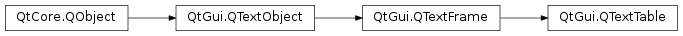

QTextTable¶
Synopsis¶
Functions¶
- def
appendColumns(count) - def
appendRows(count) - def
cellAt(c) - def
cellAt(position) - def
cellAt(row, col) - def
columns() - def
insertColumns(pos, num) - def
insertRows(pos, num) - def
mergeCells(cursor) - def
mergeCells(row, col, numRows, numCols) - def
removeColumns(pos, num) - def
removeRows(pos, num) - def
resize(rows, cols) - def
rowEnd(c) - def
rowStart(c) - def
rows() - def
setFormat(format) - def
splitCell(row, col, numRows, numCols)
Detailed Description¶
The
PySide2.QtGui.QTextTableclass represents a table in aPySide2.QtGui.QTextDocument.A table is a group of cells ordered into rows and columns. Each table contains at least one row and one column. Each cell contains a block, and is surrounded by a frame.
Tables are usually created and inserted into a document with the
QTextCursor.insertTable()function. For example, we can insert a table with three rows and two columns at the current cursor position in an editor using the following lines of code:cursor = QTextCursor(editor.textCursor()) cursor.movePosition(QTextCursor.Start) table = cursor.insertTable(rows, columns, tableFormat)The table format is either defined when the table is created or changed later with
PySide2.QtGui.QTextTable.setFormat().The table currently being edited by the cursor is found with
QTextCursor.currentTable(). This allows its format or dimensions to be changed after it has been inserted into a document.A table’s size can be changed with
PySide2.QtGui.QTextTable.resize(), or by usingPySide2.QtGui.QTextTable.insertRows(),PySide2.QtGui.QTextTable.insertColumns(),PySide2.QtGui.QTextTable.removeRows(), orPySide2.QtGui.QTextTable.removeColumns(). UsePySide2.QtGui.QTextTable.cellAt()to retrieve table cells.The starting and ending positions of table rows can be found by moving a cursor within a table, and using the
PySide2.QtGui.QTextTable.rowStart()andPySide2.QtGui.QTextTable.rowEnd()functions to obtain cursors at the start and end of each row.Rows and columns within a
PySide2.QtGui.QTextTablecan be merged and split using thePySide2.QtGui.QTextTable.mergeCells()andPySide2.QtGui.QTextTable.splitCell()functions. However, only cells that span multiple rows or columns can be split. (Merging or splitting does not increase or decrease the number of rows and columns.)Note that if you have merged multiple columns and rows into one cell, you will not be able to split the merged cell into new cells spanning over more than one row or column. To be able to split cells spanning over several rows and columns you need to do this over several iterations.
Suppose we have a 2x3 table of names and addresses. To merge both columns in the first row we invoke
PySide2.QtGui.QTextTable.mergeCells()withrow= 0,column= 0,numRows= 1 andnumColumns= 2.table.mergeCells(0, 0, 1, 2)This gives us the following table. To split the first row of the table back into two cells, we invoke the
PySide2.QtGui.QTextTable.splitCell()function withnumRowsandnumCols= 1.table.splitCell(0, 0, 1, 1)This results in the original table. See also

-
class
PySide2.QtGui.QTextTable(doc)¶ Parameters: doc – PySide2.QtGui.QTextDocument
-
PySide2.QtGui.QTextTable.appendColumns(count)¶ Parameters: count – PySide2.QtCore.intAppends
countcolumns at the right side of the table.
-
PySide2.QtGui.QTextTable.appendRows(count)¶ Parameters: count – PySide2.QtCore.intAppends
countrows at the bottom of the table.
-
PySide2.QtGui.QTextTable.cellAt(position)¶ Parameters: position – PySide2.QtCore.intReturn type: PySide2.QtGui.QTextTableCellThis is an overloaded function.
Returns the table cell that contains the character at the given
positionin the document.
-
PySide2.QtGui.QTextTable.cellAt(row, col) Parameters: - row –
PySide2.QtCore.int - col –
PySide2.QtCore.int
Return type: Returns the table cell at the given
rowandcolumnin the table.- row –
-
PySide2.QtGui.QTextTable.cellAt(c) Parameters: c – PySide2.QtGui.QTextCursorReturn type: PySide2.QtGui.QTextTableCellThis is an overloaded function.
Returns the table cell containing the given
cursor.
-
PySide2.QtGui.QTextTable.columns()¶ Return type: PySide2.QtCore.intReturns the number of columns in the table.
See also
-
PySide2.QtGui.QTextTable.insertColumns(pos, num)¶ Parameters: - pos –
PySide2.QtCore.int - num –
PySide2.QtCore.int
Inserts a number of
columnsbefore the column with the specifiedindex.- pos –
-
PySide2.QtGui.QTextTable.insertRows(pos, num)¶ Parameters: - pos –
PySide2.QtCore.int - num –
PySide2.QtCore.int
Inserts a number of
rowsbefore the row with the specifiedindex.- pos –
-
PySide2.QtGui.QTextTable.mergeCells(row, col, numRows, numCols)¶ Parameters: - row –
PySide2.QtCore.int - col –
PySide2.QtCore.int - numRows –
PySide2.QtCore.int - numCols –
PySide2.QtCore.int
Merges the cell at the specified
rowandcolumnwith the adjacent cells into one cell. The new cell will spannumRowsrows andnumColscolumns. This method does nothing ifnumRowsornumColsis less than the current number of rows or columns spanned by the cell.See also
- row –
-
PySide2.QtGui.QTextTable.mergeCells(cursor) Parameters: cursor – PySide2.QtGui.QTextCursorThis is an overloaded function.
Merges the cells selected by the provided
cursor.See also
-
PySide2.QtGui.QTextTable.removeColumns(pos, num)¶ Parameters: - pos –
PySide2.QtCore.int - num –
PySide2.QtCore.int
Removes a number of
columnsstarting with the column at the specifiedindex.- pos –
-
PySide2.QtGui.QTextTable.removeRows(pos, num)¶ Parameters: - pos –
PySide2.QtCore.int - num –
PySide2.QtCore.int
Removes a number of
rowsstarting with the row at the specifiedindex.- pos –
-
PySide2.QtGui.QTextTable.resize(rows, cols)¶ Parameters: - rows –
PySide2.QtCore.int - cols –
PySide2.QtCore.int
Resizes the table to contain the required number of
rowsandcolumns.- rows –
-
PySide2.QtGui.QTextTable.rowEnd(c)¶ Parameters: c – PySide2.QtGui.QTextCursorReturn type: PySide2.QtGui.QTextCursorReturns a cursor pointing to the end of the row that contains the given
cursor.See also
-
PySide2.QtGui.QTextTable.rowStart(c)¶ Parameters: c – PySide2.QtGui.QTextCursorReturn type: PySide2.QtGui.QTextCursorReturns a cursor pointing to the start of the row that contains the given
cursor.See also
-
PySide2.QtGui.QTextTable.rows()¶ Return type: PySide2.QtCore.intReturns the number of rows in the table.
See also
-
PySide2.QtGui.QTextTable.setFormat(format)¶ Parameters: format – PySide2.QtGui.QTextTableFormatSets the table’s
format.See also
PySide2.QtGui.QTextTable.format()
-
PySide2.QtGui.QTextTable.splitCell(row, col, numRows, numCols)¶ Parameters: - row –
PySide2.QtCore.int - col –
PySide2.QtCore.int - numRows –
PySide2.QtCore.int - numCols –
PySide2.QtCore.int
Splits the specified cell at
rowandcolumninto an array of multiple cells with dimensions specified bynumRowsandnumCols.Note
It is only possible to split cells that span multiple rows or columns, such as rows that have been merged using
PySide2.QtGui.QTextTable.mergeCells().- row –
© 2018 The Qt Company Ltd. Documentation contributions included herein are the copyrights of their respective owners. The documentation provided herein is licensed under the terms of the GNU Free Documentation License version 1.3 as published by the Free Software Foundation. Qt and respective logos are trademarks of The Qt Company Ltd. in Finland and/or other countries worldwide. All other trademarks are property of their respective owners.